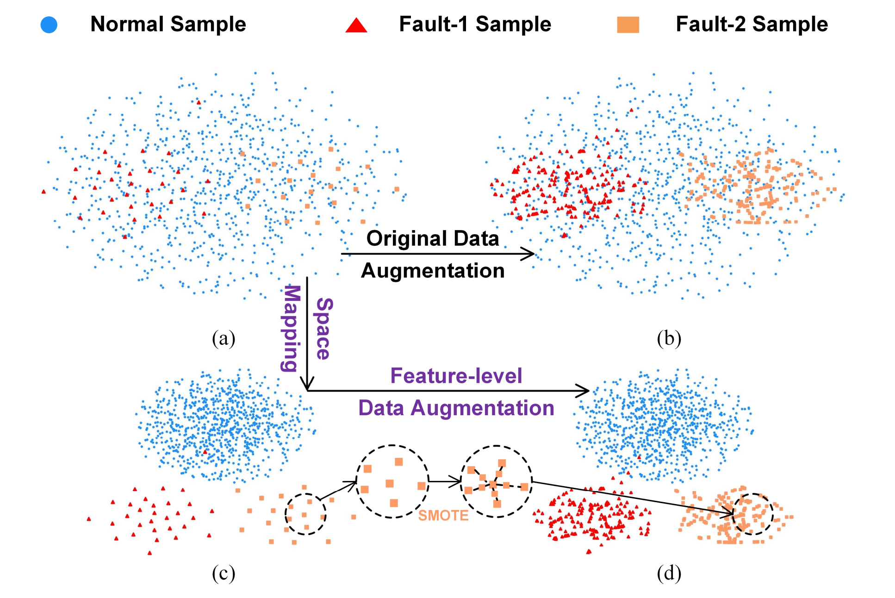
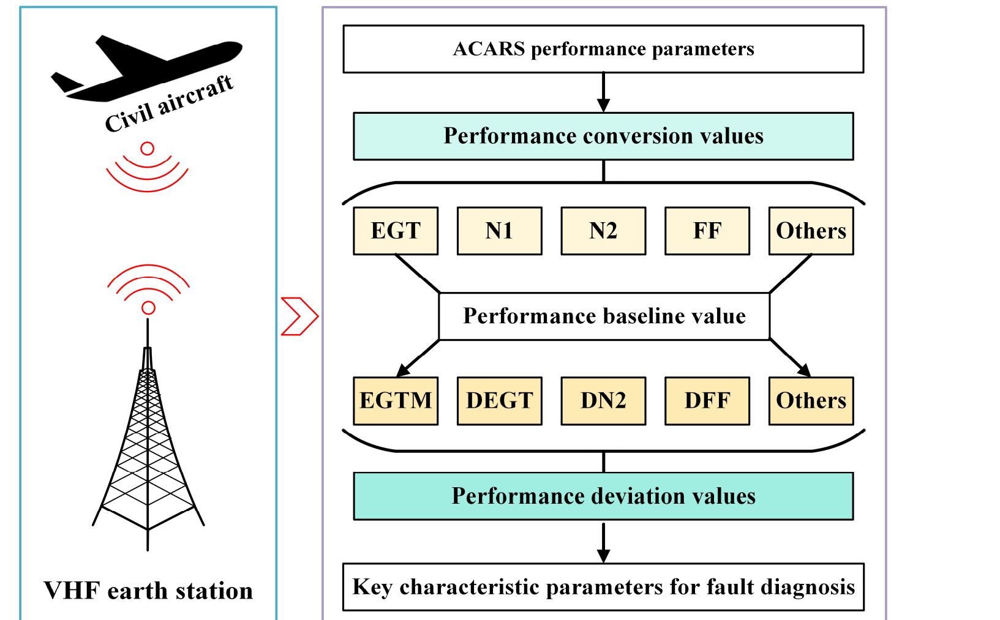
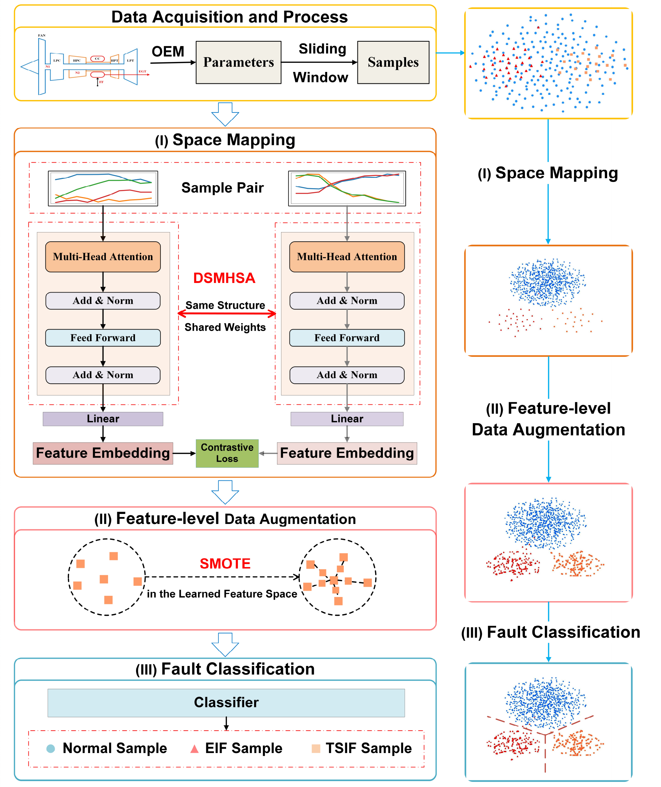
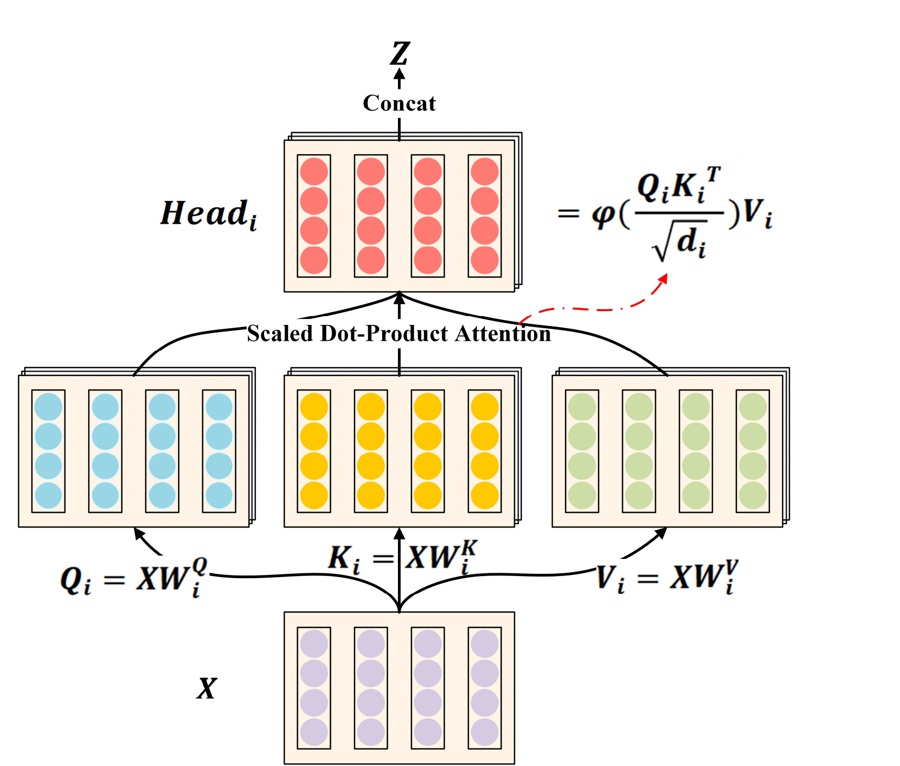
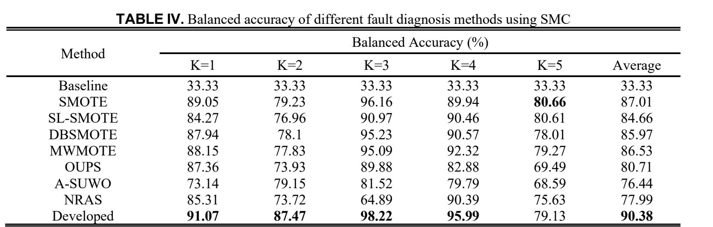
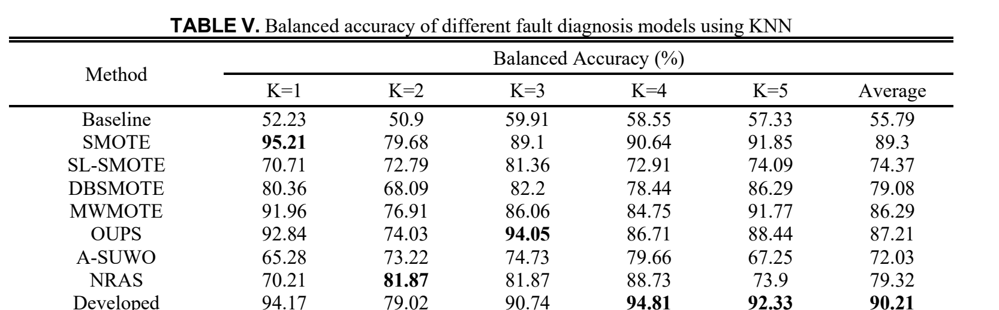
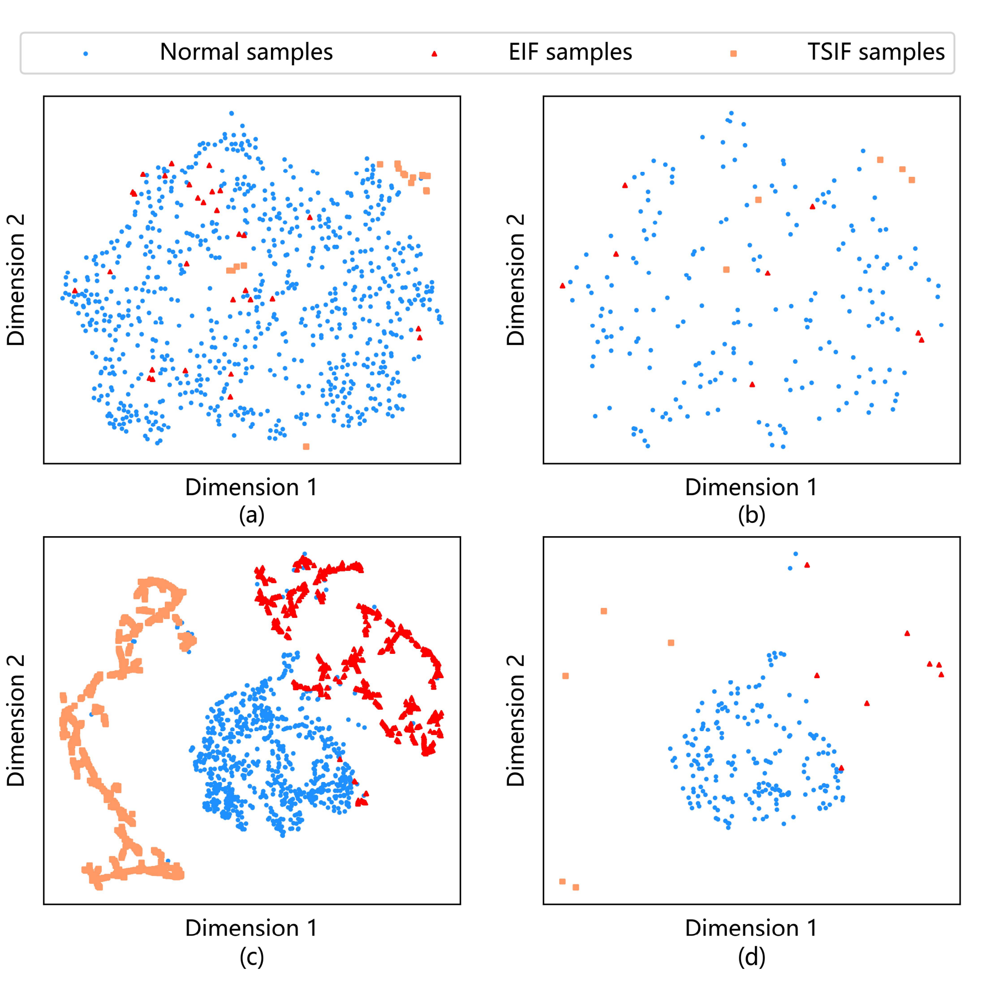
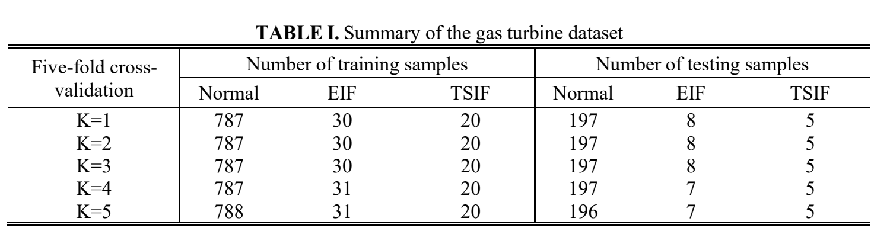
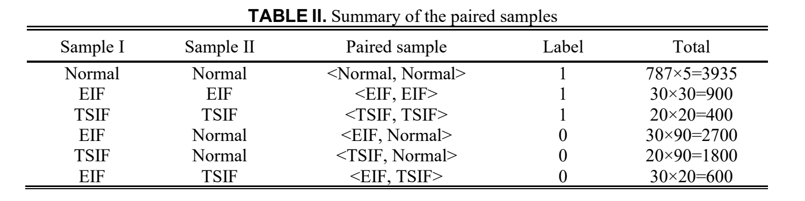

90.38%
Best average · SMC
Balanced accuracy for feature-level SMOTE, versus 87.01% for SMOTE and 76.44% for the weakest oversampler in the comparison.
Expert Systems with Applications · 238 (2024) 122023
Augmenting fault samples in the learnable feature space for imbalanced fault diagnosis of gas turbines.
Harbin Institute of Technology · Weihai Key Laboratory of Intelligent Operation and Maintenance · Harbin / Weihai, China

The method changes the geometry before it changes the count: learn a space where the classes separate, then oversample the minority class inside it.
A challenge in fault diagnosis of gas turbines is that monitoring data is composed of a small number of fault samples and an overwhelmingly large number of normal samples. Conventional data augmentation techniques generate fault samples in original data spaces, resulting in the issue that synthetic fault samples highly overlap with normal samples.
To address the issue, this paper develops a novel feature-level data augmentation method, namely feature-level SMOTE, which integrates the deep Siamese multi-head self-attention network (DSMHSA) with synthetic minority over-sampling technique (SMOTE) to reduce class imbalance and overlap simultaneously. First, the DSMHSA maps the original data into a feature space, in which the inter-class samples are far away from each other while the intra-class samples are close to each other. Second, SMOTE generates synthetic fault samples in the learned feature space, in order to balance the data set. Finally, the performance of the developed feature-level SMOTE in imbalanced fault diagnosis has been evaluated using actual monitoring data of gas turbines.
Balanced accuracy for feature-level SMOTE, versus 87.01% for SMOTE and 76.44% for the weakest oversampler in the comparison.
The gain is not tied to one decision rule: with KNN the average is 90.21%, versus 89.30% for SMOTE and 55.79% for the unbalanced baseline.
Each training fold holds 787 normal windows against 50 fault windows. Only 63 of the 1,047 total samples are faults.
Adding points to the minority class does not help if the new points land on top of normal ones. In gas turbines, incipient faults sit close to recent normal behaviour.
A classifier trained on 94% normal data can look accurate while missing every fault.
Normal windows dominate the classification error. Even when all faults are misclassified as normal, the reported error can stay low. The second problem is geometric: in the raw space, fault points sit inside or beside the normal cloud, so interpolation between minority neighbours can deepen the overlap instead of resolving it.
The paper separates these two failures. Class imbalance is handled by SMOTE; overlap is handled first by learning a class-separable representation with a Siamese attention network.
EIF: exhaust gas temperature indication fault. TSIF: total air temperature sensor indication fault. A training fold contains 787 normal, 30 EIF and 20 TSIF windows.
With normal data dominating the objective, the model can reduce error by favouring the normal class. A low overall error is therefore compatible with near-zero fault recall.
Incipient faults are close to the normal boundary. Synthetic points generated in the raw space can carry a fault label while sitting in normal territory, which misleads training.
EGTM, DEGT, DN2 and DFF form a multidimensional time series. Dependencies and trends across those channels are not captured by treating each window as an unordered vector.
Measured values are converted to standard sea-level conditions and compared with the baseline for the operating condition. The deviations are what the model sees.
The key parameters are exhaust gas temperature (EGT), low-pressure rotor speed (N1), high-pressure rotor speed (N2), and fuel flow (FF). Conversion alone still leaves the effect of operating condition, so the paper uses deviations from the condition-specific baseline: EGTM, DEGT, DN2 and DFF.
A sliding window of 10 flight cycles with step 10 turns the sequence into samples. Five-fold cross-validation is applied separately inside the normal, EIF and TSIF sets, so every fold keeps all three classes in both training and test data.

A Siamese attention network reshapes the representation; SMOTE fills the minority region of that representation; a small classifier reads the result.
Two shared-weight MHSANet encoders are trained with contrastive loss to pull same-class pairs together and push different-class pairs apart.
SMOTE interpolates between a minority point and its nearest same-class neighbour in the learned space, not in the raw input space.
A 128-to-3 Softmax classifier is trained on the balanced feature set. KNN repeats the test with a local decision rule.

How to read the schematic
Paired windows → shared encoder → contrastive loss → feature embedding.
Raw cloud → separated classes → balanced minority region → decision.
Same-class pairs are pulled together; different-class pairs are pushed beyond a margin.
01 / Space mapping
The DSMHSA is a Siamese network: two sub-networks share weights and see a pair of windows. Each sub-network is a multi-head self-attention encoder stack followed by a linear projection.
The contrastive loss makes same-class pairs close and different-class pairs at least a margin apart. The output is a 128-dimensional latent vector in which EIF, TSIF and normal windows are meant to occupy separate regions.

02 / Inside the learned space
For each minority point, SMOTE finds its nearest same-class neighbour by Euclidean distance in the latent space, then samples a point on the line between them. Repeating this fills the minority region without dragging synthetic points through the normal cloud.
λ ~ U[0, 1]; xz(i) is the nearest same-class neighbour of xi in the learned space.
03 / Classification
The Softmax classifier has one 128-node input layer and one 3-node output layer, trained with mean-square loss. KNN is used as an independent check on whether the learned geometry, rather than a particular classifier, is doing the work.
The paper also reports a dimension sweep: 128 dimensions is used for the main results, while 320 dimensions gives the best average in the sensitivity study.
Across 25 runs per method, feature-level SMOTE posts the best average balanced accuracy. The margin is largest with the smooth Softmax boundary and remains positive with a local KNN rule.
Softmax classifier · average of 5 folds
mean balanced accuracy, versus 87.01% for SMOTE and 33.33% for the unbalanced baseline.


The clearest evidence is visual: in the raw space, faults are scattered through the normal cloud. In the learned space, they sit outside it.

Reading the four panels
Training, raw space. Normal, EIF and TSIF points occupy the same region. A boundary drawn here has to cut through mixed data.
Test, raw space. The held-out samples show the same overlap, so the problem is not an artefact of the training split.
Training, learned space. After DSMHSA mapping and feature-level SMOTE, the three classes form distinct lobes. The dense chains are synthetic points.
Test, learned space. Held-out faults land outside the normal cloud, which is the geometric reason the classifier can recover them.
The overlap is not removed by drawing more points. It is removed by changing the geometry first.
Real airline operation data, two indication-fault modes, and a five-fold protocol repeated five times. The setup is small enough to inspect line by line.
The data comes from the actual operation of gas turbines at an Asian airline, not a simulator. The paper reports 984 normal, 38 EIF and 25 TSIF samples, split with five-fold cross-validation and repeated five times.
DSMHSA training pairs are built within and across classes: 5,235 positive pairs and 5,100 negative pairs. That balance matters because the contrastive objective sees both “pull together” and “push apart” examples.


Low dimensions lose information during mapping; high dimensions add weights and make training harder. The paper keeps 128-D for the main comparison and reports 320-D as the sweep optimum.
The result is strong within its setting. The paper is explicit about the safety trade-off and leaves broader validation to future work.
What travels
The gain appears with both a Softmax classifier and KNN, so it is not an artefact of one head. The same recipe — learn a separable space, then oversample inside it — could be paired with other classifiers.
What needs testing
The evaluation covers one Asian airline’s gas turbines and two indication-fault types. Transfer to other fleets, sensor sets and fault modes is not tested here. Normal recall also falls, by design of the safety argument.
“Our future efforts will focus on the discovery of new frameworks for learning better feature spaces and performing feature-level data augmentation to further improve the accuracy of gas turbine fault diagnosis.”
Published in Expert Systems with Applications, volume 238, article 122023, 2024.
@article{liu2024featurelevel,
title = {Feature-level SMOTE: Augmenting fault samples in learnable
feature space for imbalanced fault diagnosis of gas turbines},
author = {Liu, Dan and Zhong, Shisheng and Lin, Lin and
Zhao, Minghang and Fu, Xuyun and Liu, Xueyun},
journal = {Expert Systems with Applications},
volume = {238},
pages = {122023},
year = {2024},
doi = {10.1016/j.eswa.2023.122023}
}